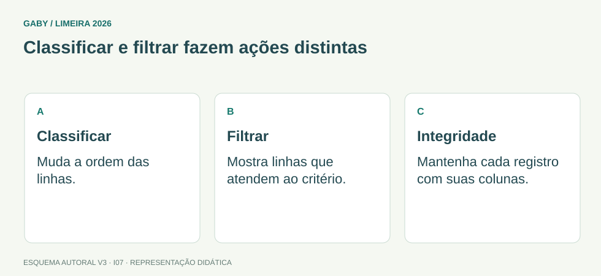

Objetivos do módulo
- Entender classificação e filtragem.
- Escolher gráficos adequados.
- Reconhecer importação de dados e recursos de impressão.
Classificar e filtrar fazem ações distintas

Descrição em texto do esquema
- Classificar: Muda a ordem das linhas.
- Filtrar: Mostra linhas que atendem ao critério.
- Integridade: Mantenha cada registro com suas colunas.
Oficina visual · aplique o esquema
Uma tabela tem nome, setor e nota. Você precisa mostrar somente o setor A e ordenar da maior nota para a menor. O que usar?
Atividade autoral complementar da V3. Registre sua resposta; a resolução está no arquivo de gabarito e revisão.
Mapa do conteúdo
1. Classificar x filtrar
Classificar muda a ordem de exibição dos registros segundo critérios (A-Z, maior-menor, múltiplos níveis). Filtrar oculta temporariamente linhas que não atendem aos critérios, sem apagá-las.
2. Gráficos
Colunas/barras comparam categorias; linhas mostram evolução temporal; setores/pizza destacam composição de um todo com poucas categorias. A escolha inadequada pode dificultar interpretação.
3. Tabelas do Excel
Transformar intervalo em Tabela adiciona cabeçalhos, filtros, expansão automática e referências estruturadas, entre outros recursos. Não confunda tabela comum de células com Tabela formal do Excel.
4. Dados externos
Excel pode importar dados de arquivos e outras fontes. Recursos de obtenção/transformação dependem da versão; o edital cobra conceito de obtenção de dados externos, não exige decorar toda interface.
5. Impressão e quebra de páginas
Área de impressão, orientação, margens, escala e quebras controlam a saída em papel/PDF. Ajustar planilha para caber em uma página pode reduzir muito o tamanho do conteúdo.
Exemplos resolvidos passo a passo
Exemplo 1
Situação: Você quer mostrar apenas linhas com status “Pendente”.
Exemplo 2
Situação: Quer mostrar evolução mensal de atendimentos.
Pegadinhas e erros frequentes
- Confundir filtro com exclusão.
- Ordenar apenas uma coluna e quebrar relação entre registros, quando a ferramenta não expande corretamente a seleção.
- Usar gráfico de pizza com dezenas de categorias.
Resumo de prova
- Classificar reordena; filtrar oculta linhas por critério.
- Linhas: tempo; colunas: comparação; pizza: composição simples.
- Dados externos podem ser importados.
- Impressão exige atenção a escala e área.
Exercícios do módulo
Resolva sem consultar o arquivo de gabarito. As questões são autorais e construídas para treinar os conceitos do edital.
- criar macro
- mostrar apenas registros que atendem critérios
- apagar definitivamente os demais
- ordenar sempre
Fonte: referência de estudo.
- reordena valores
- apaga duplicados
- cria gráfico
- protege planilha
Fonte: referência de estudo.
- pizza sempre
- radar necessariamente
- sem gráfico
- linhas
Fonte: referência de estudo.
- milhares de categorias
- texto corrido
- composição de um todo com poucas categorias
- séries temporais longas
Fonte: referência de estudo.
- filtro
- região a ser impressa
- células protegidas
- senha
Fonte: referência de estudo.
- informações importadas de outras fontes
- somente fórmulas locais
- papel impresso
- atalhos
Fonte: referência de estudo.
- ordena A-Z
- apaga menores
- soma valores
- mostra valores de100 ou mais
Fonte: referência de estudo.
- formatar fonte
- criar senha
- ordenar por mais de uma coluna
- somente uma célula
Fonte: referência de estudo.
- apagar colunas
- reduzir escala do conteúdo
- aumentar dados
- alterar fórmulas
Fonte: referência de estudo.
- filtros em cabeçalhos
- senha automática
- macro obrigatória
- somente uma coluna
Fonte: referência de estudo.
Quando terminar, abra Informática 07 - Excel - Tabelas, Gráficos, Classificação e Dados - Gabarito e Revisão.
Checklist de domínio
- ☐ Entender classificação e filtragem.
- ☐ Escolher gráficos adequados.
- ☐ Reconhecer importação de dados e recursos de impressão.
Meta do módulo: 80% ou mais nas questões, sem depender de consulta.
Referências e conteúdos auxiliares
- Microsoft — Auxílio e aprendizado do ExcelCentral de ajuda para tabelas, filtros, classificação, gráficos e fórmulas.
- Microsoft — Criar ou alterar uma referência de célulaReferências usadas em fórmulas e intervalos de células.
Referências externas de apoio consultadas para a V3 em 27/09/2026. A origem das questões é o material autoral do projeto; estes links não indicam que uma instituição publicou ou validou os exercícios. As páginas externas precisam de internet. Em informática, confira a versão do programa; em legislação, observe o recorte e as regras de atualização do edital.